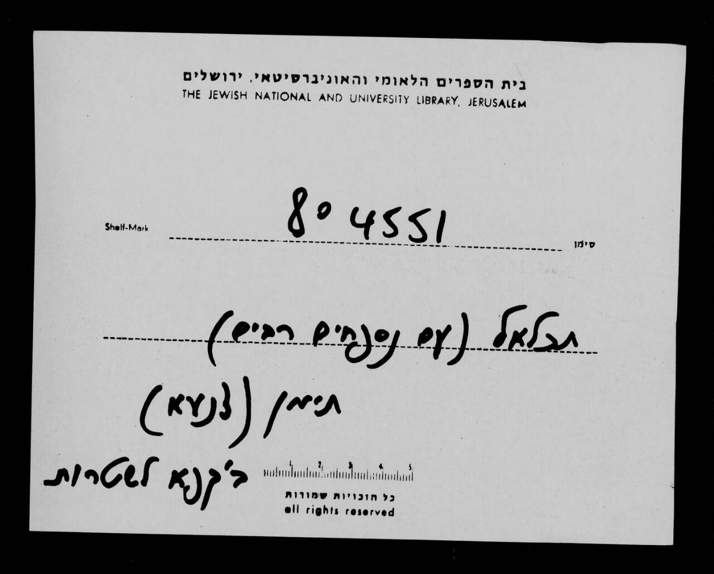
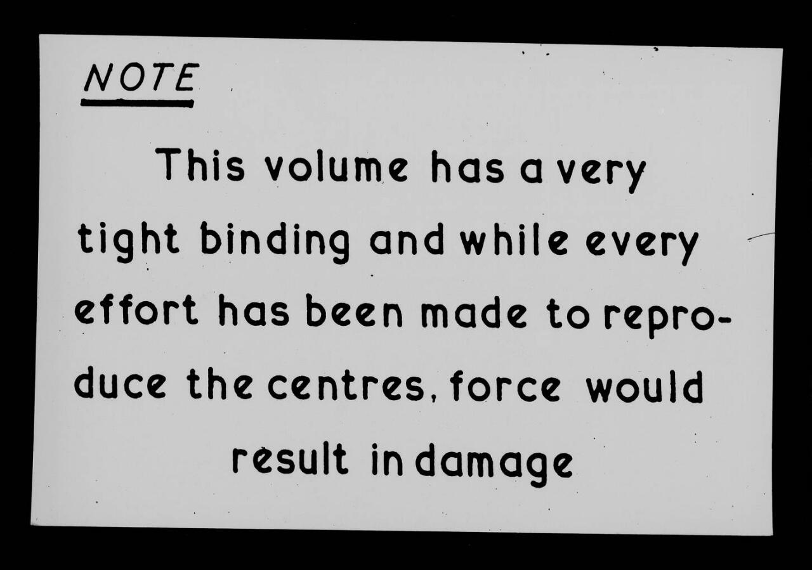
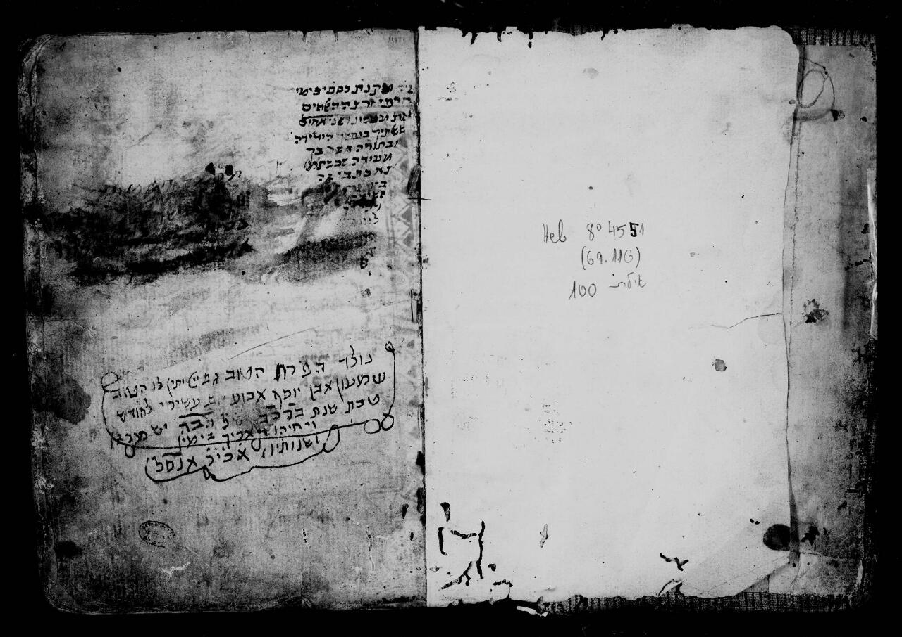
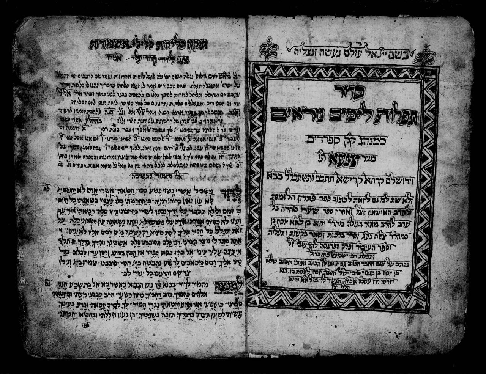
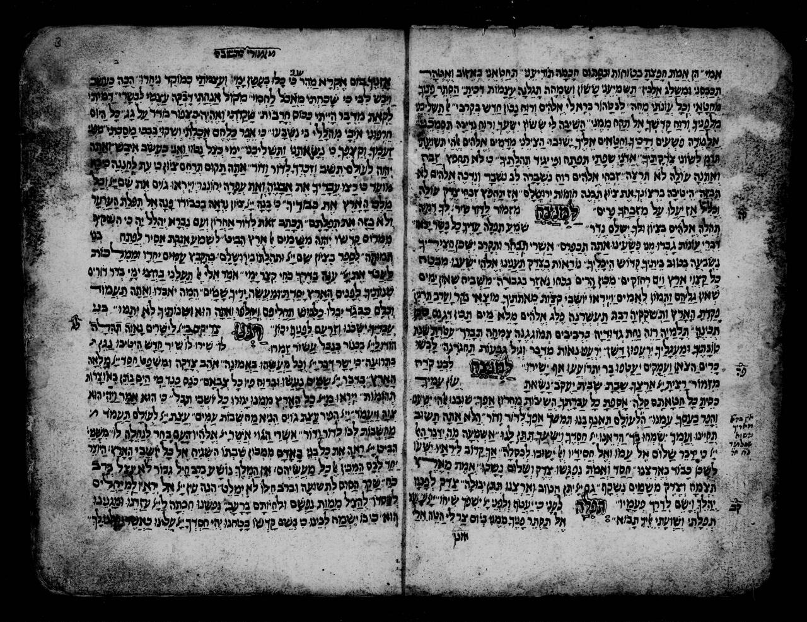

תכלאל | Manuscript | NNL_ALEPH990025795620205171 | The National Library of Israel
תכלאל | Astronomy Tables Early works to 1800 , Jews Folklore , Jews Turkey Istanbul History , Judaism Yemenite rite , Judaism Yemen (Republic) , Blood accusation , Miscellaneous prayers (Jewish liturgy) , Cabala | ב'ק"ף-ב'קפ"א לשטרות (1869-1870) | Manuscript
Any Use Permitted




